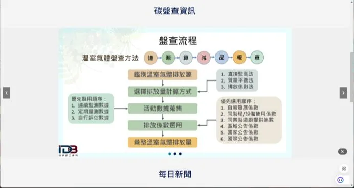
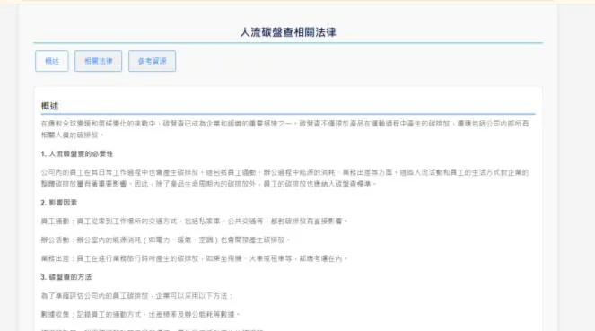

系統開發影像辨識研究機構實習
智慧物聯網設備人流碳盤查系統
用影像辨識算出區域內的人流，再換算成人流產生的碳排量，協助企業掌握人流碳盤資訊。

01 專案概述
這個作品在做什麼
這是參與經濟部產業發展署「產學研工程人才實務能力卓越基地計畫」時完成的系統。系統透過人流辨識技術計算區域內的人數，再推算出人流產生的碳排放量，讓企業掌握特定區域的人流與碳足跡，作為永續管理的依據。
主要功能與內容
- 即時偵測區域內的進出人數
- 依辨識到的人數推算區域碳排放量，轉換成容易理解的資訊
- 提供人流分析介面，以及碳盤查與相關法規說明的形象網頁
02 我負責的部分
擔任組長並負責主系統
擔任組長，負責主系統開發
使用 Python 開發系統核心，整合 YOLOv8 進行人流辨識
採用 Flask 建置後端網站架構，提供人流分析介面與 API
將辨識後的數據存入 MySQL，進行查詢與統計
在校園空間實地測試，驗證人流偵測的準確性與穩定性
03 作品畫面
實際畫面

